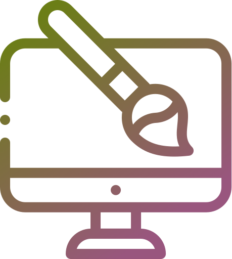
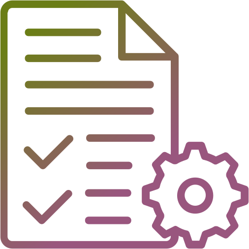
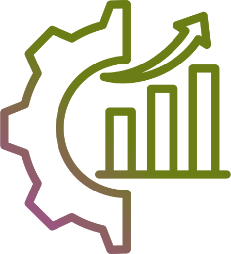
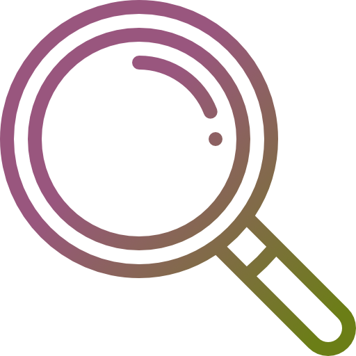
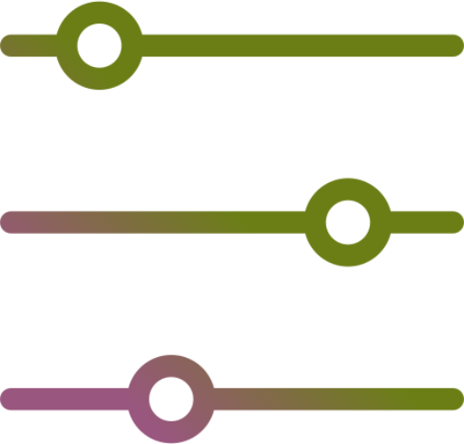
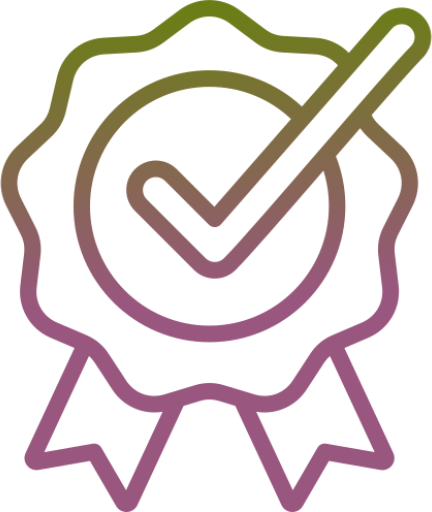
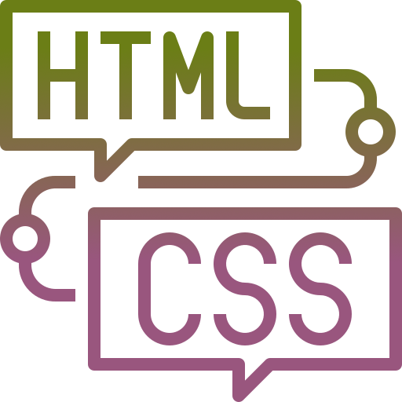
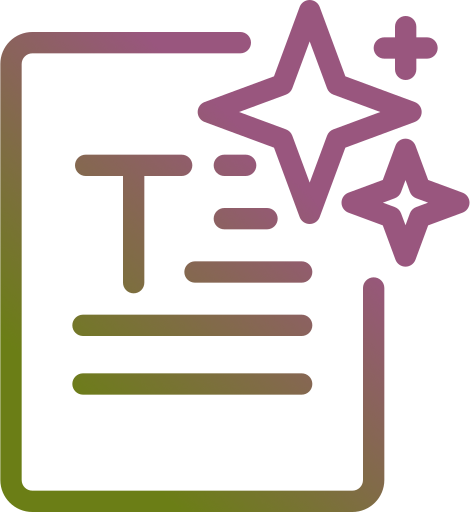

Participants
- 7 partecipants
- Interested in sustainability
- Familiar with e-commerce websites
- Mixed age range and backgrounds
UX/UI Case Study · 2025–2026 · Desktop | Mobile
The makeover 2.0
Ecodream has a lot of potential and a powerful concept, but it needs to be unlocked with a better navigation and a more powerful design! I redesigned the Ecodream e-commerce to make sustainable fashion feel more intuitive, more credible and easier to explore across desktop and mobile.


UX Research
UX/UI Design
2025–2026
(Academic project)

ToolsFigma, Maze,
Miro

DeliverablesResearch insights
Design system
Hi-fi prototype

OutcomeClearer structure
Better navigation
Tested prototype
"Ecodream is a sustainable brand that aims to produce eco-friendly bags and accessories while promoting environmental responsibility."
Its strengths lie in the message it wants to communicate, in its local production, and in the uniqueness and quality of its products.
However, the current e-commerce website has usability and accessibility issues that make it difficult to navigate and use, and the design needs to better reflect the brand’s values. The goal of this project was to redesign the full e-commerce experience without losing the essence of the brand.
Main friction points
Competitor analysis
Tested Prototypes
Real + simulated users
01 / The Problem
Sustainable,
No breadcrumbs, no search bar, no clear sense of where you are.
Users were lost before they even started browsing.
No filter, key pages were hard to reach, and every task took more steps than it should.
The navigation was confusing and clickable elements looked static.
Too much text, no hierarchy, same content repeated across pages.
Felt like a treasure hunt and not the fun kind!
Confusing Information Architecture
Poor Navigation and information discoverability
Bad Content Hierarchy & Readability
02 / Research
UnderstandingI started by browsing the site like a regular customer and the issues were impossible to miss. From there, I ran a full usability and accessibility audit, looked at what competitors were doing differently, and put together a survey to back up what I was already seeing. User personas and journey maps came last, to give a face to the problem.
What I did
What I discovered

Users can’t find what they need quickly.

No Filters and navigation sitemap.
Information is scattered and hard to scan.

Trust is low due to unclear communication.
Heuristic and Usability Score
★★★☆☆
★★★☆☆
★★★☆☆
★★★★☆
★★★☆☆
3.2 / 5
Accessibility Audit

HTML Structure
Text & ContrastCompetitor Analysis
To understand where Ecodream was falling behind, I compared four key areas across competitors to understand what similar brands were doing better.
EcoDream wins hands down on content quality but falls apart when it comes to structure.| Macroarea analysed | Ecodream | Too Italy | Seama | Ritagli di G. | Miomojo | Turinmade |
|---|---|---|---|---|---|---|
| Website / UX generale | 0,5/5 | 3,2/5 | 3,6/5 | 2,5/5 | 3,4/5 | 2,3/5 |
| Brand | 5/5 | 2,9/5 | 0,7/5 | 0,7/5 | 5/5 | 1,4/5 |
| Products | 2,5/5 | 4,3/5 | 3,2/5 | 3,6/5 | 3,6/5 | 3,9/5 |
| Customers | 2,5/5 | 4,6/5 | 3,3/5 | 4,2/5 | 4,2/5 | 4,2/5 |
| Social Networks | 2/5 | 4/5 | 2,5/5 | 2/5 | 5/5 | 3/5 |
| Overall score | 2,3/5 | 3,8/5 | 2,8/5 | 2,7/5 | 4/5 | 3/5 |
Survey Outcome
I ran a survey covering demographics, sustainability awareness, budget range and shopping preferences. I also asked specific questions about the existing Ecodream shop: filter availability, product information clarity and navigation and explored what actually stops users from completing a purchase.
Question: Do you ever abandon your cart before completing a purchase? Why?“Uncertainty about payment and doubts about the product.”
“I realise the things I want to buy aren't really necessary, just a impulse of the moment.”
“If the total feels too high, I take a moment to think it over.”
“I don’t know if this is actually sustainable.”
The survey revealed that most users abandon their cart because the purchase feels unnecessary,
navigation issues and lack of product information come second. But that's exactly the point!
We can't control personal decisions or budgets, but we can make sure that a confusing navigation or poor communication are never the reason someone walks away.
Design
With the research findings and the new information architecture as a foundation, I moved into design. The goal was to apply the necessary changes while staying true to Ecodream's identity: an artisanal brand that needed to feel exactly that way, without losing what made it recognisable.

After exploring some initial ideas on paper, I created the high-fidelity wireframes in Figma. As the project developed, I refined the original sketches and made some layout adjustments along the way. This phase helped me define the page structure, content hierarchy and key interactions before moving to the final UI. Main improvements included:
I developed a design system aligned with the brand identity, covering the color palette, typography scale, font selection, icons, spacing, grids, and interactive components. I also focused on maintaining visual consistency across the interface by organizing similar elements in a consistent way, creating recognizable patterns that are easier for users to understand.
Full Design System here on Figma!


The next step was to design the final interfaces, while continuing to iterate and refine the layouts along the way.
As I progressed, I made adjustments whenever I identified elements that were not working as effectively as expected, improving the overall consistency, usability, and visual balance of the interface.
Prototype & Usability Test
After completing the high-fidelity designs, I built interactive prototypes for both desktop and mobile in Figma, connecting all screens and interactions to prepare for testing with real users.
The goal was to test the design decisions made in the previous phases with real users, before considering the project complete.
Participants were asked to complete 4 tasks using the interactive prototype.
Their behaviour and feedback were recorded and analysed to identify pain points and areas of improvement.
Find information about EcoDream’s values and sustainability mission.
Explore the shop.
Find a specific product: "Emess oro".
Add the product to the wishlist.
Each task was paired with an ease-of-completion rating, and the test closed with an overall experience evaluation to obtain both quantitative and qualitative insight.
Task completion across all 4 tasks
Overall experience rating
Found navigation as expected
Every participant successfully found company information, explored the shop, located a specific product and added it to the wishlist.
Misclick rates were higher than expected, particularly when finding company information (77.9%) and searching for a specific product (63.9%), suggesting some improvements are needed.
The missing search bar was confirmed as a priority, almost every participant clicked on the search bar, even though it wasn't part of the prototype, confirming it as a priority addition.
Qualitative feedback was largely positive, with users describing the experience as "intuitive", "accessible" and "easy to navigate". A few noted the interaction felt occasionally "slow" or "stiff", but it's mostly a prototype issue.
Conclusion
The EcoDream redesign successfully addressed the main usability issues identified during the research phase. The final usability test validated the proposed solutions while also highlighting new opportunities for future iterations and improvements.
As with any digital product, design is an ongoing process of learning, testing and refinement.
Users can now navigate the site with more ease, find what they need faster and access key information with less friction.
Research, testing and iterations helped shape decisions based on real user needs, behaviours and pain points.
The new design communicates EcoDream’s mission more clearly, reinforcing trust and emotional connection with the brand.